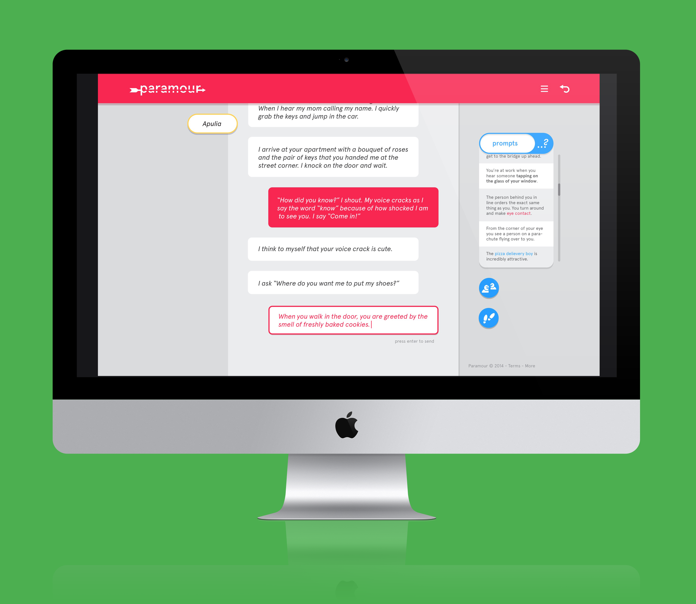
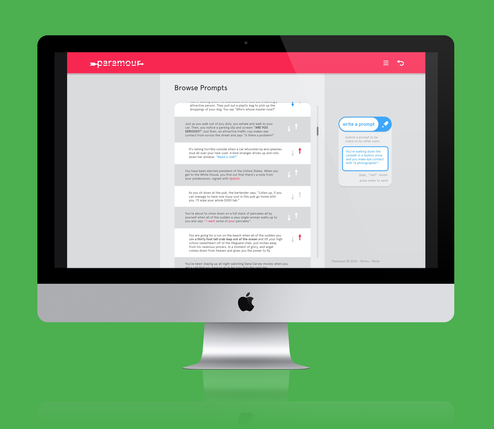

paramour
education design, interaction design, UI/UX
Design a fun way for adults to roleplay fake romances over the internet as a testing ground for relationships.

My goal with paramour is to design a way for adults to engage in sociodramatic play over the internet as a testing ground for romantic relationships. I based my design on the three following assumptions and solution. You can find a fake website pitching the idea here. It's just a placeholder for the moment. More info on my process can be found at >>>this blog post<<<.
Below, you can find some of the mockups of the screens I designed. I am currently looking for a full-stack web developer who is interested in working with me on developing paramour. You can find a full .pdf of all the screens here.
This is one of the onboarding screens. With this part of the interface I was exploring how to make the "rules" of the experience seem as intuitive and easy to use as possible.
This is the chat client, which is the main locus of activity. Here, the user has "prompts" activated, which gives the user prompts when their tongue is tied. I included this as a way to design success into the experience.

This screen has by far the most information. On this screen, the user can view, submit, and rank prompts. This way, if the user's match is not responding quickly, they have something to do in the mean time. Also, since these suggestions come from other users, the experience improves as the user base grows. (Zoom in on the image if you want to read the copy; I spent a long time coming up with these prompts hehe).